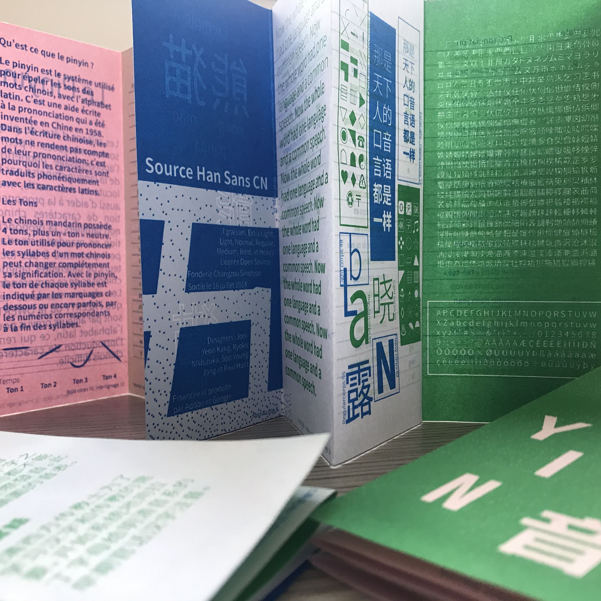
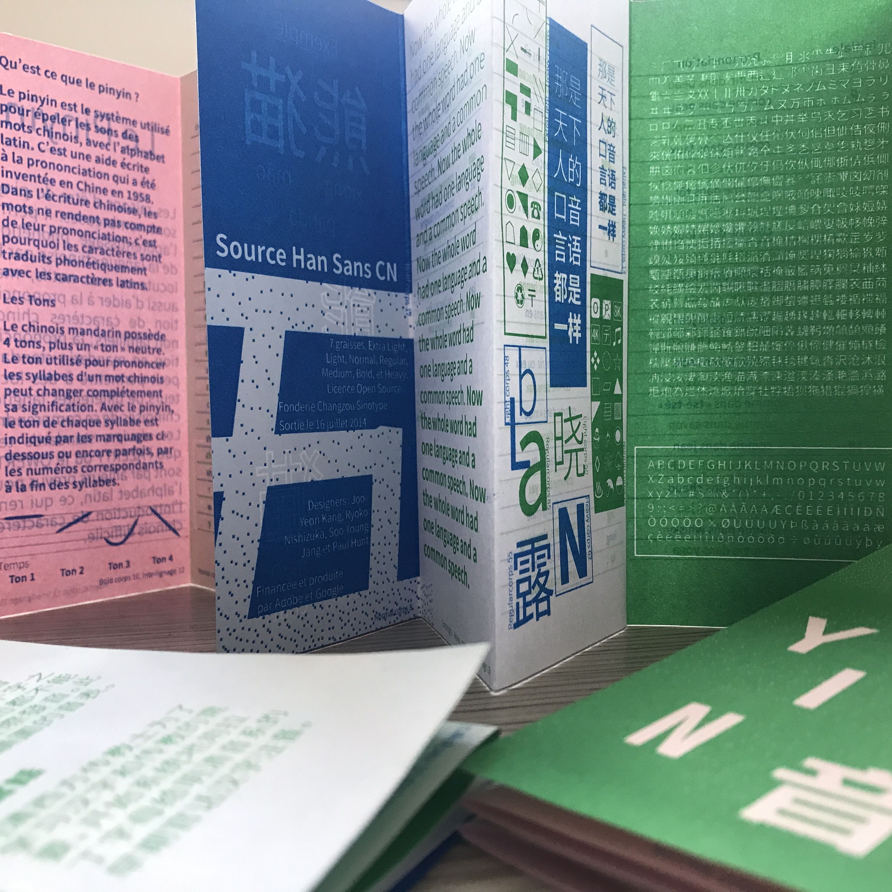
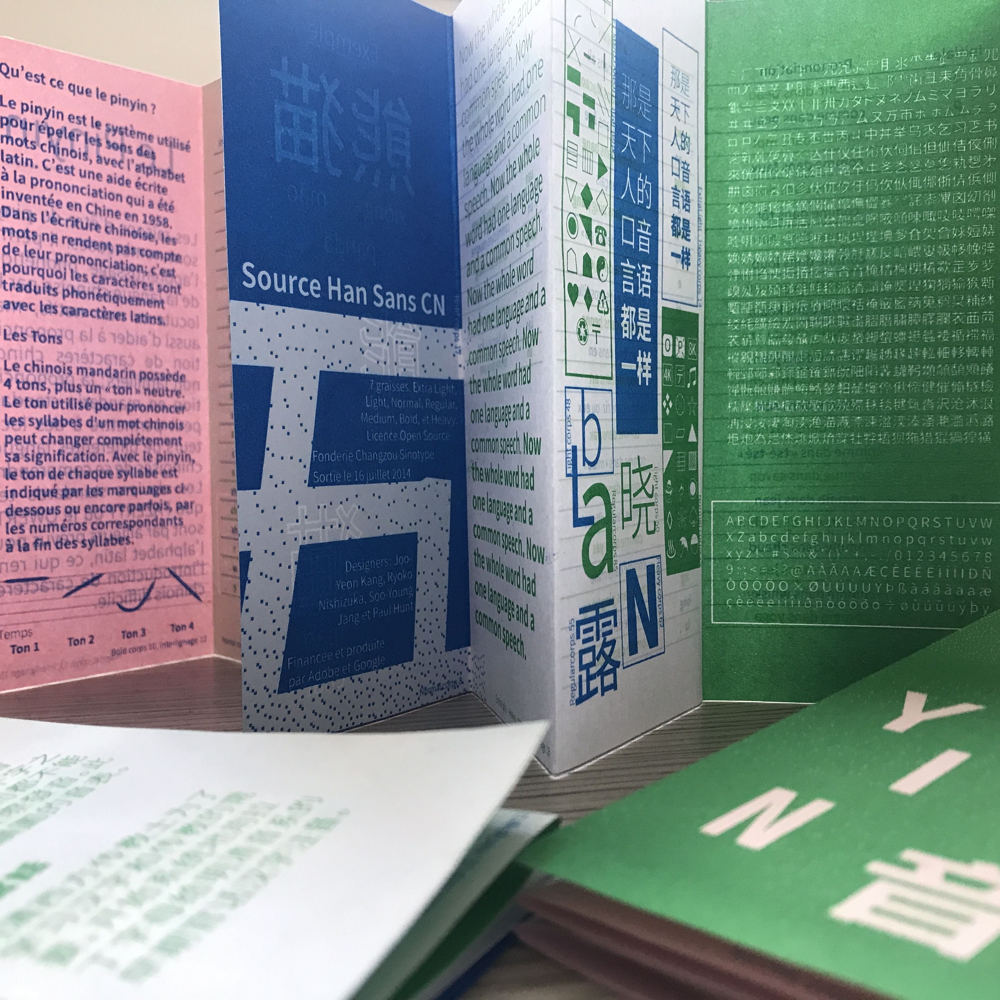

Ce spécimen de caractères est un petit guide explicatif pour les débutants qui veulent apprendre à parler le mandarin. Il répond à des questions comme qu’est ce que le pinyin, ou quels sont les quatre tons. Afin d’intégrer la façon dont se fait la prononciation, il y a un tableau qui corrèle des mots français aux pinyin chinois, pour en faciliter la compréhension.
Réalisé en mai 2021
